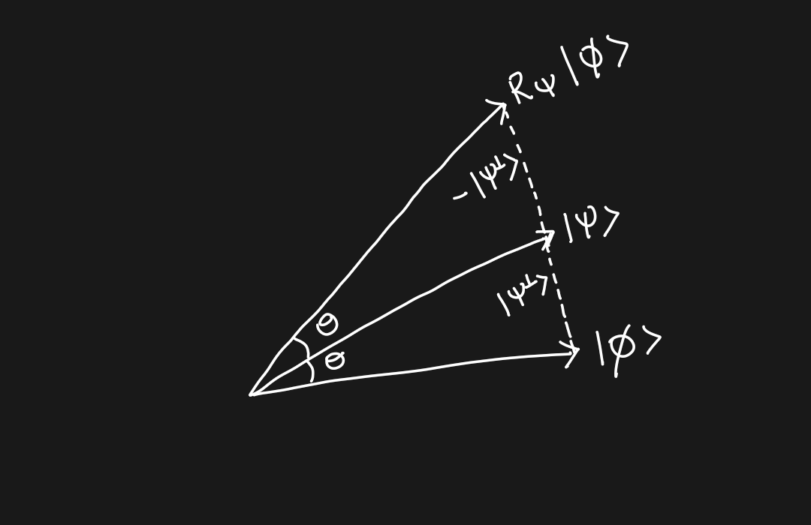

## Mathematical Foundation
### of
## Quantum Computing
Pranay Raja Krishnan
22MMT002
The LNM Institute of Information & Technology
Jaipur
# Qubits
---
### Qubits
* The computers we commonly use today are based on **bits**
* A **bit** can take on either a $0$ or a $1$ state
* Their behaviour is modelled by classical information theory
* Classical information theory tells us these **classical computers** are equivalent to an abstract Turing Machine in computational efficiency
---
### Qubits
* On a quantum computer the **qubit** (quantum bit) is the basic unit of information.
* While bits take only two values, the state of a qubit can take on a continuum of values
* Along with some other quantum induced phenomena, this lets quantum computers have a computational efficiency more than a Turing Machine in some cases
* In labs, qubits have been implemented using photon polarization, electron spin and even defect centers in a diamond.
---
### Hilbert Space
> A complex **Hilbert space** $\mathcal{H}$ is a vector space over $\mathbb{C}$ with a positive definite inner product
$\braket{} : \mathcal{H} \times \mathcal{H} \to \mathbb{C}$ defined as $(\vec\psi,\vec\phi) \to \braket{\vec\psi,\vec\phi}$ such that:
> * conjugate symmetric: $\braket{\vec\psi,\vec\phi} = \overline{\braket{\vec\phi,\vec\psi}}$
> * positive definite: $\braket{\vec\psi,\vec\psi} \geq 0$ and $\braket{\vec\psi,\vec\psi} = 0 \iff \vec\psi = 0$
> * conjugate linear in first argument: $\braket{a \vec\phi_1 + b \vec\phi_2, \psi} = \overline{a} \braket{\vec\phi_1, \vec\psi} + \overline{b} \braket{\vec\phi_2, \vec\psi}$
> * linear in second argument: $\braket{\vec\psi, a \vec\phi_1 + b \phi_2} = a \braket{\vec\psi,\vec\phi_1} + b \braket{\vec\psi,\vec\phi_2}$
>
> and this inner product induces a norm $||.|| : \mathcal{H} \to \mathbb{R}$ defined as $\psi \to \sqrt{\braket{\vec\psi,\vec\psi}}$ in which $\mathcal{H}$ is complete.
---
### Qubits
> A **qubit** is any quantum mechanical system whose state can be completely described by a unit vector
> in a $2$-dimensional complex Hilbert space $\mathcal{H}$ and which follows these axioms:
> * Principle of Superposition
> * Principle of Entanglement
> * Principle of Measurement
> * Principle of Transformation
>
> The Hilbert space $\mathcal{H}$ is known as the **state space** and is equipped with the inner product $\braket{}$ which is defined as $\braket{\vec\psi, \vec\phi} = \overline{a} c + \overline{b} d = \begin{bmatrix} \overline{a} & \overline{b} \end{bmatrix} \begin{bmatrix} c \\\\ d \end{bmatrix}$ where $\vec\psi = \begin{bmatrix} a \\\\ b\end{bmatrix}, \vec\phi = \begin{bmatrix} c \\\\ d \end{bmatrix} \in \mathcal{H}$.
>
> Any unit vector of $\mathcal{H}$ is called a **state vector**.
---
### Dirac Bra/Ket Notation
> We will write any qubit state vector $\vec{\psi} \in \mathcal{H}$ as $\ket{\psi}$ and is read as **ket psi**
> The notation $\bra{\psi}$ represents conjugate transpose of $\ket\psi$
> $\bra\psi = \ket{\psi}^\dagger = \begin{bmatrix} \overline{a} & \overline{b} \end{bmatrix}$ and is read as **bra psi**
This means the inner product $\braket{\vec\psi,\vec\phi}$ will be $\bra{\psi}\ket\phi$.
> The inner product will be denoted as $\braket{\psi|\phi} = \overline{a} c + \overline{b} d$
> for any $\ket{\psi} = \begin{bmatrix} a \\\\ b\end{bmatrix}, \ket{\phi} = \begin{bmatrix} c \\\\ d \end{bmatrix} \in \mathcal{H}$ and is read as **braket**
The set of all bra vectors forms the dual space of $\mathcal{H}$.
### Qubits
##### Principle of Superposition
> Suppose $\ket{\psi}$ and $\ket{\sigma}$ are two mutually orthogonal vectors in a Hilbert space $\mathcal{H}$, and $a, b \in \mathbb{C}$.
>
>Then $a \ket{\psi} + b \ket{\sigma} \in \mathcal{H}$ is a valid state vector of the state space of a qubit when $|a|^2 + |b|^2 = 1$.
>
> Consider a state $\ket{\psi} = a \ket{0} + b \ket{1}$ and a state $\ket{\sigma} = a' \ket{0} + b' \ket{1}$
> Let $a \ket{0} + b \ket{1} = c (a' \ket{0} + b' \ket{1})$ where $c \in \mathbb{C}$ and $|c| = 1$.
> Then $\ket\psi$ and $\ket\sigma$ represent the same state.
> The multiple $c \in \mathbb{C}$ with $|c| = 1$ by which two vectors representing the same quantum state vector differ is called the **global phase**.
---
### Qubits
* When working with Hilbert spaces associated with quantum systems, we normally use *orthonormal bases* to describe state vectors.
* The **computational basis** for the two dimensional complex vector space $\mathcal{H}$ is $\\{ \\; \ket{0}, \ket{1} \\; \\}$ where $\ket{0} = \begin{bmatrix} 1 \\\\ 0 \end{bmatrix}$ and $\ket{1} = \begin{bmatrix} 0 \\\\ 1 \end{bmatrix}$
* The **Hadamard Basis** for the two dimensional complex vector space $\mathcal{H}$ is $\\{ \\; \ket{+}, \ket{-} \\; \\}$ where $\ket{+} = \displaystyle\frac{1}{\sqrt 2} (\ket{0} + \ket{1}) = \frac{1}{\sqrt{2}} \begin{bmatrix} 1 \\\\ 1 \end{bmatrix}$
and $\ket{-} = \displaystyle\frac{1}{\sqrt 2} (\ket{0} - \ket{1}) = \frac{1}{\sqrt{2}} \begin{bmatrix} 1 \\\\ -1 \end{bmatrix}$
---
### Qubits
##### Basic Properties of the computational basis
Using the orthonormality of the basis $\\{ \ket{0}, \ket{1} \\}$, we have the following facts:
* $\braket{0|0} = \bra{0}\ket{0} = 1$
* $\braket{1|1} = \bra{1}\ket{1} = 1$
* $\braket{1|0} = \bra{1}\ket{0} = 0$
* $\braket{0|1} = \bra{0}\ket{1} = 0$
If $\ket{v}$ is a state vector and $\ket{v} = \begin{bmatrix} a \\\\ b \end{bmatrix} \in \mathcal{H}$ with respect to the computational basis, then:
* $\braket{0|v} = a$
* $\braket{1|v} = b$
* $\ket{v} = a \ket{0} + b \ket{1} = \braket{0|v} \ket{0} + \braket{1|v} \ket{1}$
### Tensor Product
> Let $\ket\psi = \begin{bmatrix} a \\\\ b \end{bmatrix} \in \mathcal{H}\_1$ and $\ket\phi = \begin{bmatrix} c \\\\ d \end{bmatrix} \in \mathcal{H}\_2$
> The **tensor product** of $\ket\psi$ and $\ket\phi$ is defined as $\ket\psi \otimes \ket\phi = \begin{bmatrix} a \\\\ b \end{bmatrix} \otimes \begin{bmatrix} c \\\\ d \end{bmatrix} = \begin{bmatrix} a \begin{bmatrix} c \\\\ d \end{bmatrix} \\\\ b \begin{bmatrix} c \\\\ d \end{bmatrix} \end{bmatrix} = \begin{bmatrix} ac \\\\ ad \\\\ bc \\\\ bd \end{bmatrix}$
* $\ket{0} \otimes \ket{0} = \begin{bmatrix} 1 \\\\ 0 \end{bmatrix} \otimes \begin{bmatrix} 1 \\\\ 0 \end{bmatrix} = \begin{bmatrix} 1 \begin{bmatrix} 1 \\\\ 0 \end{bmatrix} \\\\ 0 \begin{bmatrix} 1 \\\\ 0 \end{bmatrix} \end{bmatrix} = \begin{bmatrix} 1 \\\\ 0 \\\\ 0 \\\\ 0 \end{bmatrix}$
* Similarly, $\ket{0} \otimes \ket{1} = \begin{bmatrix} 0 \\\\ 1 \\\\ 0 \\\\ 0 \end{bmatrix}$, $\ket{1} \otimes \ket{0} = \begin{bmatrix} 0 \\\\ 0 \\\\ 1 \\\\ 0 \end{bmatrix}$ and $\ket{1} \otimes \ket{1} = \begin{bmatrix} 1 \\\\ 1 \\\\ 1 \\\\ 1 \end{bmatrix}$
---
### Tensor Product
> The notation $\ket\psi \otimes \ket\phi$ is often simplified as $\ket\psi \ket\phi$ or $\ket{\psi \phi}$
> Let $\ket{\psi_1}, \ket{\psi_2} \in \mathcal{H}\_1$ and $\ket{\phi_1}, \ket{\phi_2} \in \mathcal{H}\_2$.
> The inner product of the tensors $\ket{\psi\_1} \otimes \ket{\phi\_1}$
> and $\ket{\psi\_2} \otimes \ket{\phi\_2}$ is defined as
> $\braket{\\; \ket{\psi\_1} \otimes \ket{\phi\_1} \\; | \\; \ket{\psi\_2} \otimes \ket{\phi\_2} \\;} = ( \\; \bra{\psi\_1} \otimes \bra{\phi\_1} \\; | \\; \ket{\psi\_2} \otimes \ket{\phi\_2} \\; ) = \braket{\psi\_1 | \psi\_2} \braket{\phi\_1 | \phi\_2}$
* *Example:* $\braket{\\; \ket{01} \\; | \\; \ket{11} \\;} = \braket{0|1} \braket{1|1} = 0 \cdot 1 = 0$
* *Example:* $\braket{\\; \ket{01} \\; | \\; \ket{11} \\;} = \braket{0|0} \braket{1|1} = 1 \cdot 1 = 1$
* Similarly, taking all combinations, we can see $\\{ \\; \ket{00}, \ket{01}, \ket{10}, \ket{11} \\; \\}$ is an orthogonal set and linearly independent
* $\\{ \\; \ket{00}, \ket{01}, \ket{10}, \ket{11} \\; \\}$ forms an orthonormal basis for a space of dimension 4
---
### Qubits
##### Principle of Entanglement
> Given an ONB $\\{ \ket{ e\_{i}} \\}\_{i = 1}^n$ for $\mathcal{H}\_1$ and an ONB $\\{ \ket{f_{j}} \\}\_{j = 1}^m$ for $\mathcal{H}\_2$, we have $\\{ \ket{e\_{i}} \otimes \ket{f\_{j}} \\}$ is an orthonormal basis for the **tensor product space** $\mathcal{H}\_1 \otimes \mathcal{H}\_2$.
> When we have two qubits being treated as a combined system, the state space of the combined system is the tensor product $\mathcal{H}\_1 \otimes \mathcal{H}\_2$ of the state spaces $\mathcal{H}\_1, \mathcal{H}\_2$ of the component qubit subsystems.
>
> Further, for a system of $n$ interacting qubits, the combined state space is the tensor product
> $\mathcal{H}\_1 \otimes \mathcal{H}\_2 \otimes ... \otimes \mathcal{H}\_n$ of the state spaces of the $n$ qubits taken independently.
* Given the computational basis $\\{ \\; \ket{0}, \ket{1} \\; \\}$ for $\mathcal{H}\_1$ and the computational basis $\\{ \\; \ket{0}, \ket{1} \\; \\}$ for $\mathcal{H}\_2$. Then $\\{ \\; \ket{00}, \ket{01}, \ket{10}, \ket{11} \\; \\}$ is an ONB for $\mathcal{H}\_1 \otimes \mathcal{H}\_2$ called the **computational basis** for $\mathcal{H}\_1 \otimes \mathcal{H}\_2$ and is also denoted as $\\{ \ket{0}, \ket{1}, \ket{2}, \ket{3} \\}$
---
### Qubits
* For $1$ qubit, the computational basis is $\\{ \ket{0}, \ket{1} \\}$
* For $2$ qubits, the computational basis is $\\{ \ket{0}, \ket{1}, \ket{2}, \ket{3} \\}$ where
* $\ket{0} = \ket{00} = \ket{0} \otimes \ket{0}$
* $\ket{1} = \ket{01} = \ket{0} \otimes \ket{1}$
* $\ket{2} = \ket{10} = \ket{1} \otimes \ket{0}$
* $\ket{3} = \ket{11} = \ket{1} \otimes \ket{1}$
* For $n$ qubits, the computational basis is $\\{ \ket{0}, \ket{1}, ..., \ket{2^n - 1} \\}$ where
* $\ket{0} = \ket{00...00} = \underbrace{\ket{0} \otimes \ket{0} \otimes ... \otimes \ket{0}}\_{n\text{ times }}$
* $\ket{1} = \ket{00...01} = \underbrace{\ket{0} \otimes \ket{0} \otimes ... \otimes \ket{0}}\_{n-1\text{ times }} \otimes \ket{1}$
* $\ket{2^n - 1} = \ket{11...11} = \underbrace{\ket{1} \otimes \ket{1} \otimes ... \otimes \ket{1}}\_{n\text{ times }}$
---
### Qubits
* Another commonly used basis for a $2$-qubit system is the **Bell Basis** which is the set of Bell states $\\{ \\; \ket{\phi^+}, \ket{\phi^-}, \ket{\psi^+}, \ket{\psi^-} \\; \\}$ where:
* $\ket{\phi^+} = \frac{1}{\sqrt{2}} ( \ket{00} + \ket{11} ) = \begin{bmatrix} \frac{1}{\sqrt{2}} \\\\ 0 \\\\ 0 \\\\ \frac{1}{\sqrt{2}} \end{bmatrix}$ and $\ket{\phi^-} = \frac{1}{\sqrt{2}} ( \ket{00} - \ket{11} ) = \begin{bmatrix} \frac{1}{\sqrt{2}} \\\\ 0 \\\\ 0 \\\\ - \frac{1}{\sqrt{2}} \end{bmatrix}$
* $\ket{\psi^+} = \frac{1}{\sqrt{2}} ( \ket{01} + \ket{10} ) = \begin{bmatrix} 0 \\\\ \frac{1}{\sqrt{2}} \\\\ \frac{1}{\sqrt{2}}\\\\ 0 \end{bmatrix}$ and $\ket{\psi^-} = \frac{1}{\sqrt{2}} ( \ket{01} - \ket{10} ) = \begin{bmatrix} 0 \\\\ \frac{1}{\sqrt{2}} \\\\ - \frac{1}{\sqrt{2}} \\\\ 0 \end{bmatrix}$
* The Bell states are orthonormal
* Bell states are of fundamental importance to quantum information processing. Particularly for their use for quantum teleportation and dense coding.
---
### Qubits
> A state $\ket{\psi} \in \mathcal{H}\_1 \otimes \mathcal{H}\_2 \otimes ... \otimes \mathcal{H}\_n$ is said to be **entangled** if it cannot be written as a tensor product of state vectors $\ket{v\_1} \in \mathcal{H}\_1, \ket{v\_2} \in \mathcal{H}\_2, ..., \ket{v\_n} \in \mathcal{H}\_n$.
>
> The state is said to be **seperable** if we can write $\ket{\psi} = \ket{v\_1} \otimes \ket{v\_2} \otimes ... \otimes \ket{v\_n} = \ket{v\_1 v\_2...v\_n}$
> for some $\ket{v\_i} \in \mathcal{H}\_i$.
* *Example:* The state $\ket{\psi} = \frac{1}{\sqrt{2}} (\ket{01} + \ket{11})$ of a $2$-qubit system is seperable since we can write $\ket{\psi} = \ket{+} \otimes \ket{1} = \frac{1}{\sqrt{2}} (\ket{0} + \ket{1}) \otimes \ket{1}$
* *Example:* The state $\ket{\psi^+} = \frac{1}{\sqrt{2}} (\ket{00} + \ket{11})$ of a $2$-qubit system is an entangled state.
* In fact all the Bell states are entangled states
### Unitary Transformation
> A **unitary transformation** $U: \mathcal{H}\_1 \to \mathcal{H}\_2$ between two Hilbert space $\mathcal{H}\_1$ and $\mathcal{H}\_2$ is a isomorphism that preserves the inner product.
> That is, for a unitary transformation $U$ on $\mathcal{H}$ we have $\braket{U \psi | U \phi } = \braket{\psi | \phi }$ for all $\ket{\psi}, \ket{\phi} \in \mathcal{H}$
> A matrix $U$ is called **unitary** if its conjugate transpose $U^\dagger$ is its inverse.
> That is, a matrix is said to be unitary if $U U^\dagger = U^\dagger U = I$
> A unitary transformation $U$ is represented by a unitary matrix.
---
### Qubits
##### Principle of Transformation
> In a quantum state space $\mathcal{H}$, every change of a quantum state over time that has not been caused by measurement is described by a unitary transformation.
> If $\ket{\psi\_1}$ is the state at time $t\_1$ and $\ket{\psi\_2}$ is the state at time $t\_2 > t\_1$, then $\ket{\psi\_2}$ is described by
> $\ket{\psi\_2} = U \ket{\psi\_1}$ where $U: \mathcal{H} \to \mathcal{H}$ is a unitary transformation.
* A **quantum gate** is a function $U: \mathcal{H} \to \mathcal{H}$ such that $f(\ket\psi) = \ket\phi$ where $\ket\psi, \ket\phi \in \mathcal{H}$ are valid quantum states in the state space $\mathcal{H}$ of $n$ interacting qubits.
* Any quantum gates is unitary and any unitary transformation is a valid quantum gate.
* A **quantum circuit** is a sequence of quantum gates and measurement operators applied to an $n$-qubit register initialized to some known quantum state.
---
# Quantum Gates
---
### Quantum Gates
> Any quantum gate is reversible.
> Any quantum gate has the same number of inputs and outputs
This implies that not all classical gates have a direct quantum analog.
> Consider the state space of a single qubit $\mathcal{H}$ and the orthonormal basis $\\{ \ket{e_1}, \ket{e_2} \\}$.
> The operator
> $U: \mathcal{H} \to \mathcal{H}$ that takes $\ket{e_1} \to \ket{\psi}$ and $\ket{e_2} \to \ket{\phi}$ is represented
> by the matrix $\ket{e_1}\bra{\psi} + \ket{e_2}\bra{\phi}$.
> *Deferred Measurement Principle*: Every quantum circuit is equivalent to a circuit in which all measurements are made after all other computations.
---
### Quantum Gates
##### Gates on a single qubit
> The **Pauli Gates** are the gates $\\{ \\; I, X, Y, Z \\; \\}$ where
> $I = \begin{bmatrix} 1 & 0 \\\\ 0 & 1 \end{bmatrix}$, $X = \begin{bmatrix} 0 & 1 \\\\ 1 & 0 \end{bmatrix}$,
> $Y = \begin{bmatrix} 0 & -i \\\\ i & 0 \end{bmatrix}$ and $Z = \begin{bmatrix} 1 & 0 \\\\ 0 & -1 \end{bmatrix}$
* The Pauli $X$ gate is also known as the **Quantum NOT Gate** since
$X \ket{0} = \begin{bmatrix} 0 & 1 \\\\ 1 & 0 \end{bmatrix} \begin{bmatrix} 1 \\\\ 0 \end{bmatrix} = \begin{bmatrix} 0 \\\\ 1 \end{bmatrix} = \ket{1}$ and $X \ket{1} = \begin{bmatrix} 0 & 1 \\\\ 1 & 0 \end{bmatrix} \begin{bmatrix} 0 \\\\ 1 \end{bmatrix} = \begin{bmatrix} 1 \\\\ 0 \end{bmatrix} = \ket{0}$
resembles the behaviour of the classical NOT Gate.
* However, most quantum gates do not have a classical analog in the same way.
---
### Quantum Gates
##### Gates on a single qubit
> The **Hadamard Gate** is the gate $H = \frac{1}{\sqrt{2}} \begin{bmatrix} 1 & 1 \\\\ 1 & -1 \end{bmatrix} = \ket{0}\bra{+} + \ket{1}\bra{-}$
* The Hadamard gate is important because it allows us to obtain a uniform superposition state, $\ket{+}$ from $\ket{0}$ or $\ket{-}$ from $\ket{1}$
* $H = \frac{1}{\sqrt{2}} \begin{bmatrix} 1 & 1 \\\\ 1 & -1 \end{bmatrix} = \frac{1}{\sqrt{2}} \left ( \begin{bmatrix} 0 & 1 \\\\ 1 & 0 \end{bmatrix} + \begin{bmatrix} 1 & 0 \\\\ 0 & -1 \end{bmatrix} \right ) = \frac{1}{\sqrt{2}} ( X + Z ) $
* $H X H = Z$ and $HYH = -Y$.
---
### Quantum Gates
##### Gates on a single qubit
> The **Rotation Gates** are the gates $\\{ R\_x, R\_y, R\_z \\}$ where
> $R\_x = \begin{bmatrix} \cos(\frac{\theta}{2}) & -i \sin(\frac{\theta}{2}) \\\\ -i \sin(\frac{\theta}{2}) & \cos(\frac{\theta}{2}) \end{bmatrix}$,
> $R\_y = \begin{bmatrix} \cos \frac{\theta}{2} & - \sin \frac{\theta}{2} \\\\ \sin \frac{\theta}{2} & \cos \frac{\theta}{2} \end{bmatrix}$ and
> $R\_z = \begin{bmatrix} 1 & 0 \\\\ 0 & e^{i\theta} \end{bmatrix}$
* $R\_x, R\_y, R\_z$ each define a rotation on the Bloch sphere of the state about the $x$-axis, $y$-axis, $z$-axis respectively by an angle of $\theta$.
* $R\_z = \ket{0}\bra{0} + e^{i\theta} \ket{1}\bra{1}$
* The Pauli matrix $Z = \begin{bmatrix} 1 & 0 \\\\ 0 & -1 \end{bmatrix} = \begin{bmatrix} 1 & 0 \\\\ 0 & e^{i \pi} \end{bmatrix}$ is a special case of the $R\_z$ matrix and represents a rotation of $\pi$ degrees about the $z$-axis.
---
### Quantum Gates
##### Gates on multiple qubits
> The **CNOT gate** (Controlled-NOT) is the gate defined by the matrix
> $\text{CNOT} = \begin{bmatrix} 1 & 0 & 0 & 0 \\\\ 0 & 1 & 0 & 0 \\\\ 0 & 0 & 0 & 1 \\\\ 0 & 0 & 1 & 0 \end{bmatrix} = \ket{00} \bra{00} + \ket{01} \bra{01} + \ket{11} \bra{01} + \ket{10} \bra{11}$
* The CNOT gate acts on 2 qubits to apply a NOT gate on the second qubit if the first qubit is in the $\ket{1}$ state.
* $\text{CNOT} \ket{00} = \ket{00}$, $\text{CNOT} \ket{01} = \ket{01}$, $\text{CNOT} \ket{10} = \ket{11}$ and $\text{CNOT} \ket{11} = \ket{10}$.
* The CNOT gate is important because it allows us to obtain an entangled state from unentangled states. For example, it sends the unentangled state $\frac{1}{\sqrt{2}} ( \ket{00} + \ket{10} )$ to the entangled state $\frac{1}{\sqrt{2}} ( \ket{00} + \ket{11} )$.
---
### Quantum Gates
##### Gates on multiple qubits
> Given a register of $n$ qubits, the **Hadamard Transform** $H^{\otimes n}$ is the transformation that applies the Hadamard gate $H = \begin{bmatrix} 1 & 1 \\\\ 1 & -1 \end{bmatrix}$ on each of the $n$ qubits.
> $H^{\otimes n} = \underbrace{H \otimes H \otimes ... \otimes H}\_{n \text{ times }}$
* Consider $H\_0 = 1$.
Then we can recursively define the Hadamard transform as
$H^{\otimes n} = \frac{1}{\sqrt{2}} \begin{bmatrix} H^{\otimes n - 1} & H^{\otimes n - 1} \\\\ H^{\otimes n - 1} & -H^{\otimes n - 1} \end{bmatrix}$ for all $n > 0$.
* For $n > 1$, we can also recursively define the Hadamard transform as
$H^{\otimes n} = H \otimes H^{\otimes n - 1}$
---
### Quantum Gates
##### Gates on multiple qubits
> Consider an $n$-qubit register with each qubit set to $\ket{0}$.
> Then $H^{\otimes n} \ket{\underbrace{00...0}\_{n \text{ times }}} = \displaystyle\frac{1}{2^{n/2}} \sum_{j=0}^{2^n -1} \ket{j}$
Consider the Hadamard transform applied to an $n$-qubit register, each qubit set to $\ket{0}$,
$H^{\otimes n} \ket{0}^n = \underbrace{(H \ket{0}) \otimes (H \ket{0}) \otimes (H \ket{0}) \otimes ... \otimes (H \ket{0})}_{n\text{ times }}$
$= \underbrace{\frac{1}{2^{n/2}} (\ket{0} + \ket{1}) \otimes (\ket{0} + \ket{1}) \otimes (\ket{0} + \ket{1}) ... \otimes (\ket{0} + \ket{1})}\_{n \text{ times }} = \displaystyle\frac{1}{2^{n/2}} \sum_{j=0}^{2^n -1} \ket{j}$
# Grover's Algorithm
---
### Key Points
* Published by Lov Kumar Grover in 1996
* One of the most famous quantum algorithms
* Targets an unstructured search problem
* Does not have as impressive of a speedup as Shor's
* Applicable to a broader range of problems than Shor's
* Finds the solution with high probability in quadratic time
* Original paper introduces it as a database search algorithm
Note:
* Shor's has an exponential speedup while Grover's has only quadratic speedup
* Grover's algorithm could brute-force a 128-bit symmetric cryptographic key in roughly $2^64$ iterations, or a 256-bit key in roughly $2^128$ iterations.
### Reflection about a Vector
> Given vectors $\ket\psi, \ket\phi \in \mathcal{H}$, the operator $R_\psi = 2 \ket\psi \bra\psi - I$ applied to $\ket\phi$ represents the reflection of $\ket\phi$ about the direction of $\ket\psi$
Let $\mathcal{H}_\psi^\perp \subset \mathcal{H}$ represent the subspace of $\mathcal{H}$ orthogonal to $\ket\psi$.
Let $\ket{\psi^\perp} \in \mathcal{H}_\psi^\perp$ such that $\ket{\psi^\perp} = \ket\phi - a \ket\psi$ for some $a \in \mathbb{C}$
$\implies \ket\phi = a \ket\psi + \ket{\psi^\perp}$
$R_\psi \ket\phi = (2 \ket\psi \bra\psi - I) \ket\phi$
$ = 2 \ket\psi \bra\psi \ket\phi - \ket\phi = 2 \ket\psi \bra\psi ( a \ket\psi + \ket{\psi^\perp}) - \ket\phi$
$ = 2 a \ket\psi \braket{\psi|\psi} + 2 \ket\psi \braket{\psi|\psi^\perp} - \ket\phi = 2 a \ket\psi - \ket\phi$
$ = 2 a \ket\psi - (a \ket\psi + \ket{\psi^\perp}) = a \ket\psi - \ket{\psi^\perp}$
Reflection about a Vector
Given vectors $\ket\psi, \ket\phi \in \mathcal{H}$, the operator $R_\psi = 2 \ket\psi \bra\psi - I$ applied to $\ket\phi$ represents the reflection of $\ket\phi$ about the direction of $\ket\psi$

### Reflection about a Vector
> Given vectors $\ket\psi, \ket\phi \in \mathcal{H}$, the operator $R_\psi = 2 \ket\psi \bra\psi - I$ is unitary and therefore is a valid quantum gate
$R_\psi R_\psi^\dagger = (2 \ket\psi\bra\psi - I)(2 \ket\psi\bra\psi - I)^\dagger$
$ = (2 \ket\psi\bra\psi - I) (2 (\ket\psi\bra\psi)^\dagger - I^\dagger)$
$ = (2 \ket\psi\bra\psi - I)(2 \ket\psi\bra\psi - I)$
*Because $(\ket\psi\bra\psi)^\dagger = \ket\psi\bra\psi$*
$ = 4\ket\psi\bra\psi - 2 \ket\psi \bra\psi - 2 \ket\psi \bra\psi + I = I$
### Problem Setup
> We are given a set of $N$ distinct elements forming a set $X = \\{ x_1, x_2, ..., x_N \\}$
> and a boolean function $f: X \to \\{ 0,1 \\}$ with $f(x) = 1$ for *exactly one* $x_i \in X$.
> We are tasked with finding that unique $x_i$
* The problem above represents an unstructured search problem
* We need to search for the solution from a finite set of possible solutions
* Consider an example for such a problem:
* A set of $N$ coins is laid out on a table heads up
* One of these coins is flipped so that it is tails up
* We need to find which coin has been flipped by checking only one coin at a time
Note:
* Unstructured means we cannot use any clever tricks like binary search
* Lov Grover designed this algorithm to be used for searching databases, where we need to match a certain query
* Like finding a needle in a haystack
### Classical Approach
> We are given a set of $N$ distinct elements forming a set $X = \\{ x_1, x_2, ..., x_N \\}$
> and a boolean function $f: X \to \\{ 0,1 \\}$ with $f(x) = 1$ for *exactly one* $x_i \in X$.
> We are tasked with finding that unique $x_i$
* The only classical deterministic algorithm is to query the function $f$ with each value of $x_i \in X$ until we find the solution $x_i$ with $f(x_i) = 1$
* On average we will require $\frac{N}{2}$ queries to $f$ to determine the solution, and in the worst case we will need $N$ queries to $f$
* This means that the algorithm will have a time complexity of $O(N)$
Note:
* When we know the number of solutions, say $t$ solutions among $N$ possibilities, a randomized algorithm will give a time complexity of $O(\frac{N}{t})$
### Grover's Algorithm
> We are given a set of $N$ distinct elements forming a set $X = \\{ x_1, x_2, ..., x_N \\}$
> and a boolean function $f: X \to \\{ 0,1 \\}$ with $f(x) = 1$ for *exactly one* $x_i \in X$.
> We are tasked with finding that unique $x_i$
* Consider without loss of generality that $N = 2^n$ for some $n \in \mathbb{N}$
* Let each $x_i \in \\{ x_1, x_2, ..., x_N \\}$ correspond to the basis vector $\ket{i-1}$ in a quantum state space with basis vectors $\\{\ket{0}, \ket{1}, ..., \ket{2^n-1} \\}$
* Since $N = 2^n$, we will need to use an $n$-qubit register to achieve a suitable corresponding basis.
* Grover's algorithm relies on a black box circuit which tells us whether a particular $x_i$ is a solution
* We wrap this black box in a *quantum oracle* which takes a quantum state as input and can tell us whether a given basis vector $\ket{i}$ is a solution.
### Oracle
> We are given a set of $N$ distinct elements forming a set $X = \\{ 0, 1, ..., 2^n-1 \\}$ and a boolean function $f: X \to \\{ 0,1 \\}$ with $f(x) = 1$ for *exactly one* $x_i \in X$
* Consider we have access to a classical circuit $\boxed{O_c}$ which takes input of $x \in X$ as a binary string, i.e. $x \in \\{0,1\\}^n$, and outputs $f(x)$
* Since we have possible values of $x$ from $0$ to $2^n-1$, we will need an $n$-bit binary string as input to $\boxed{O_c}$
* Using $\boxed{O_c}$ directly in Grover's algorithm by swapping in $\ket{x}$ will not work since is not a valid quantum gate
### Oracle
> We are given a set of $N$ distinct elements forming a set $X = \\{ 0, 1, ..., 2^n-1 \\}$ and a boolean function $f: X \to \\{ 0,1 \\}$ with $f(x) = 1$ for *exactly one* $x_i \in X$
* One way of rectifying this is by constructing a bit-oracle circuit $\boxed{U_f}$ in such a way that it has equal number of inputs and outputs. Also the circuit should be invertible.
* We define $\boxed{U_f}$ as the circuit such that $U_f(\ket{x}\ket{y}) = \ket{x}\ket{y \oplus f(x)}$ where $\oplus$ denotes addition modulo 2 and $\ket{y}$ is an extra ancilliary qubit given to hold the output.
* We are not concerned with the exact implementation of $\boxed{U_f}$ and think of it it as a black-box which we expect is provided to us
* To show $U_f$ is unitary and reversible, check [Sevag Gharibian's Lecture on Deutsch Algorithm, Section 1](https://people.vcu.edu/~sgharibian/courses/CMSC491/notes/Lecture%206%20-%20Deutsch%27s%20algorithm.pdf)
### Oracle
> Given a bit-oracle circuit $\boxed{U_f}$ we can construct the phase-oracle $\boxed{U_\pm}$
* The circuit for $\boxed{U_f}$ has extra output qubit $\ket{y}$ to handle, this can be simplified to an $n$-qubit circuit.
* The approach for this is to construct a phase-oracle $\boxed{U_\pm}$ such that $U_\pm \ket{x} = \begin{cases} \ket{x} & \text{ if } f(x) = 0 \\\\ -\ket{x} & \text{ if } f(x) = 1 \end{cases} = (-1)^{f(x)} \ket{x}$
---
### Oracle
> Given a bit-oracle circuit $\boxed{U_f}$ we can construct the phase-oracle $\boxed{U_\pm}$
Suppose that we are given a bit-oracle circuit $\boxed{U_f}$ and the ancilliary $\ket{y}$ is set to $\ket{-}$.
Then the state of the input is $\ket{x}\otimes \ket{-} = \frac{1}{\sqrt{2}} (\ket{x0} - \ket{x1})$
*First case, $f(x) = 0$:* $U_f( \ket{x} \otimes \ket{-})$ leaves the state unchanged.
*Second case, $f(x) = 1$:* $U_f(\ket{x} \otimes \ket{-}) = \ket{x} \otimes \frac{1}{\sqrt{2}} (\ket{0 \oplus 1} - \ket{1 \oplus 1})$
$ = \ket{x} \otimes \frac{1}{\sqrt{2}} (\ket{1} - \ket{0}) = \frac{1}{\sqrt{2}} (\ket{x1} - \ket{x0})$
$ \implies U_f(\ket{x} \otimes \ket{-}) = (-1)^{f(x)} (\ket{x} \otimes \ket{-})$ which is the action of the phase-oracle
### Grover's Algorithm
> The circuit for Grovers algorithm $\boxed{G}$ performs the operation given by the operator
> $G = \underbrace{D \cdot U_\pm \cdot....U_\pm \cdot D \cdot U_\pm \cdot D \cdot U_\pm}_{\text{ applied a certain number of times }} \cdot H^{\otimes n}$
* The steps in the algorithm are:
* Set the $n$-qubit register to $\ket{0}^n$
* Apply the Hadamard Transform $H^{\otimes n}$
* Repeat the following steps a certain number of times:
* Apply the phase oracle $U_\pm$
* Apply Grover's diffusion operator $D$
* Measure the state of the $n$-qubit register
---
### Grover's Algorithm
> The circuit for Grovers algorithm $\boxed{G}$ performs the operation given by the operator
> $G = \underbrace{D \cdot U_\pm \cdot....U_\pm \cdot D \cdot U_\pm \cdot D \cdot U_\pm}_{\text{ applied a certain number of times }} \cdot H^{\otimes n}$
Let $\ket{k} \in \\{ \ket{0}, \ket{1}, ..., \ket{2^n - 1} \\}$ be the required solution.
At the end of the algorithm, we require that the $n$-qubit register be brought very close to the state $\ket{k}$.
Applying the Hadamard gate on $\ket{0}^n$, we get the register in the *average state*
$\ket\psi = H^{\otimes n} \ket{0}^n = \displaystyle \frac{1}{2^{n/2}} \sum_{i=0}^{2^n-1}\ket{j}$
Applying $U_\pm$ on this average state $\ket\psi$, we get $U_\pm(\ket\psi) = U_\pm (\frac{1}{2^{n/2}} \sum_{j=0}^{2^n - 1} \ket{j}) $
$ = \frac{1}{2^{n/2}} \sum_{j=0}^{2^n-1} U_\pm (\ket{j}) = - \frac{1}{2^{n/2}} \ket{k} + \frac{1}{2^{n/2}} \sum_{j=0, j \neq k}^{2^n-1} \ket{j}$
---
### Grover's Algorithm
> The circuit for Grovers algorithm $\boxed{G}$ performs the operation given by the operator
> $G = \underbrace{D \cdot U_\pm \cdot....U_\pm \cdot D \cdot U_\pm \cdot D \cdot U_\pm}_{\text{ applied a certain number of times }} \cdot H^{\otimes n}$

---
### Grover's Algorithm
> The circuit for Grovers algorithm $\boxed{G}$ performs the operation given by the operator
> $G = \underbrace{D \cdot U_\pm \cdot....U_\pm \cdot D \cdot U_\pm \cdot D \cdot U_\pm}_{\text{ applied a certain number of times }} \cdot H^{\otimes n}$
* Grover's diffusion operator $D$ in the above algorithm is a gate which reflects any state $\ket{\phi}$ about the axis of the average state $\ket{\psi} = \frac{1}{2^{n/2}} \sum_{i=0}^{2^n-1}\ket{j}$
* We can represent the operation of $D$ as $D = 2 \ket\psi\bra\psi - I$
* [Grover's paper, Page 5](https://arxiv.org/pdf/quant-ph/9605043.pdf) has details on how to construct $D$ from Hadamard Gates and Rotation Gates
---
### Grover's Algorithm
> The circuit for Grovers algorithm $\boxed{G}$ performs the operation given by the operator
> $G = \underbrace{D \cdot U_\pm \cdot....U_\pm \cdot D \cdot U_\pm \cdot D \cdot U_\pm}_{\text{ applied a certain number of times }} \cdot H^{\otimes n}$
The mean amplitude of the state $U_\pm(\ket\psi)$ before applying $D$ is
$\displaystyle \frac{\frac{-1}{2^{n/2}} + \frac{1}{2^{n/2}} (2^n -1) }{2^n} = \displaystyle \frac{(2^n - 2) \frac{1}{2^{n/2}}}{2^n} \approx \frac{2^n}{2^n} \frac{1}{2^{n/2}} = \frac{1}{2^{n/2}} = \frac{1}{\sqrt{N}}$
Therefore after reflection about $\ket\psi$, the amplitudes of most entries $\ket{j}$ where $j \neq k$ are slightly
reduced but roughly the same.
However, for the solution $k \in \\{0,1 \\}^n$, the entry of $\ket{k}$ will be reflected to an
amplitude of $\displaystyle\frac{3}{2^{n/2}} = \frac{3}{\sqrt{N}}$
---
### Grover's Algorithm
> The circuit for Grovers algorithm $\boxed{G}$ performs the operation given by the operator
> $G = \underbrace{D \cdot U_\pm \cdot....U_\pm \cdot D \cdot U_\pm \cdot D \cdot U_\pm}_{\text{ applied a certain number of times }} \cdot H^{\otimes n}$

---
### Grover's Algorithm
> The circuit for Grovers algorithm $\boxed{G}$ performs the operation given by the operator
> $G = \underbrace{D \cdot U_\pm \cdot....U_\pm \cdot D \cdot U_\pm \cdot D \cdot U_\pm}_{\text{ applied a certain number of times }} \cdot H^{\otimes n}$
After one application of $D U_\pm$, the amplitude of the solution component $\ket{k}$ will be $\displaystyle \frac{3}{\sqrt{N}}$
and the amplitude of the non-solution components will be sligtly less than $\displaystyle\frac{1}{\sqrt{N}}$
If we apply $D U_\pm$ a second time, the amplitude of the solution component $\ket{k}$ will be $\displaystyle \frac{5}{\sqrt{N}}$ and the amplitude of the non-solutions will be even lower.
So $p$ applications of $D U_\pm$ will result in the solution component having an amplitude of $\displaystyle\frac{2p + 1}{\sqrt{N}}$ and the non-solution components will reduce in amplitude with each application.
---
### Grover's Algorithm
> The circuit for Grovers algorithm $\boxed{G}$ performs the operation given by the operator
> $G = \underbrace{D \cdot U_\pm \cdot....U_\pm \cdot D \cdot U_\pm \cdot D \cdot U_\pm}_{\text{ applied a certain number of times }} \cdot H^{\otimes n}$
Suppose we need to make the amplitude of the solution greater than a constant $A$.
We proceed to repeat $D U_\pm$ a total of $p = \displaystyle \frac{A\sqrt{N}}{2}$ times (rounded up).
We will get the solution component having an amplitude of $\displaystyle \frac{2 \frac{A\sqrt{N}}{2} + 1}{\sqrt{N}} > A$ and the non-solution components will have very low amplitude for large $N$.
Since we repeat $D U_\pm$ a total of $\displaystyle \frac{A\sqrt{N}}{2}$ (rounded up), we see that Grover's algorithm has a time-complexity of $\frac{A}{2} \sqrt{N} \sim O(\sqrt{N})$
### Amplitude Amplification Algorithm
> We are given a set of $N = 2^n$ distinct elements forming a set $X = \\{ x_1, x_2, ..., x_N \\}$
> and a boolean function $f: X \to \\{ 0,1 \\}$ with $f(x) = 1$ for *some* $x_i \in X$.
> Given each $x_i$ corresponds to a basis element $\ket{i-1}$ of a quantum state space with basis $\\{\ket{0},\ket{1}, ...,\ket{2^n - 1} \\}$, we want to bring the state space close to a uniform superposition of the basis vectors for which the corresponding $x_i$ satisfies $f(x_i) = 1$
* Generalization of Grover's original algorithm where there are multiple possible solutions in the solution space
* More precisely, Grover's original algorithm belongs to what we now call the class of amplitude amplification algorithms
* This finds use as a subroutine in many other quantum algorithms either to prepare the input as an equal superposition of certain basis states or to emphasize the effect of certain basis states
---
### Amplitude Amplification Algorithm
> Given a quantum state space of an $n$-qubit register with basis $\mathscr{B} = \\{\ket{0}, \ket{1}, ..., \ket{2^n-1} \\}$, and a subbasis $\mathscr{B}'$.
> To bring the state of the register close to a superposition of basis vectors in $\mathscr{B}'$,
> we apply the algorithm $G = \underbrace{D \cdot U_\pm \cdot....U_\pm \cdot D \cdot U_\pm \cdot D \cdot U_\pm}_{\text{ applied a certain number of times }}$ to any initial state $\ket{\psi}$
* $U_\pm \ket{x} = \begin{cases} \ket{x} & \text{ if } f(x) \text{ is not a solution } \\\\ -\ket{x} & \text{ if } f(x) \text{ is a solution } \end{cases} = (-1)^{f(x)} \ket{x}$
* $U_\pm$ puts a negative sign for all $\ket{i}$ which are solutions and none of $\ket{i}$ which are not solutions
* $D = 2 \ket\psi \bra\psi - I$ and is normally written as $H^{\otimes n} (2 \ket{0}\bra{0} - I) H^{\otimes n}$ in most sources
---
### Amplitude Amplification Algorithm
> Given a quantum state space of an $n$-qubit register with basis $\mathscr{B} = \\{\ket{0}, \ket{1}, ..., \ket{2^n-1} \\}$, and a subbasis $\mathscr{B}'$.
> To bring the state of the register close to a superposition of basis vectors in $\mathscr{B}'$,
> we apply the algorithm $G = \underbrace{D \cdot U_\pm \cdot....U_\pm \cdot D \cdot U_\pm \cdot D \cdot U_\pm}_{\text{ applied a certain number of times }}$ to any initial state $\ket{\phi}$
* We call the equal superposition of basis vectors in $\mathscr{B}'$ as the good state $\ket{G}$ and the superposition of vectors in $\mathscr{B} - \mathscr{B}'$ as the bad state $\ket{B}$.
* The analysis of the amplitude amplification algorithm can be done fully in the 2-d vector space spanned by the basis $\\{ \ket{G}, \ket{B} \\}$.
* Clearly, $\ket{G}$ and $\ket{B}$ are orthogonal, i.e. $\ket{B}$ is an angle $\displaystyle \frac{\pi}{2}$ away from $\ket{G}$ in this vector space
---
### Amplitude Amplification Algorithm
> Given a quantum state space of an $n$-qubit register with basis $\mathscr{B} = \\{\ket{0}, \ket{1}, ..., \ket{2^n-1} \\}$, and a subbasis $\mathscr{B}'$.
> To bring the state of the register close to a superposition of basis vectors in $\mathscr{B}'$,
> we apply the algorithm $G = \underbrace{D \cdot U_\pm \cdot....U_\pm \cdot D \cdot U_\pm \cdot D \cdot U_\pm}_{\text{ applied a certain number of times }}$ to any initial state $\ket{\phi}$
Let there be $M$ solutions out out $N = 2^n$ possibilities.
Let those $M$ solutions be known as *marked states*.
Then $\ket{G} = \displaystyle \frac{1}{\sqrt{M}} \sum_{i \text{ is marked }} \ket{i}$ and $\ket{B} = \displaystyle \frac{1}{\sqrt{N-M}} \sum_{i \text{ is unmarked }} \ket{i}$
Then a state $\ket\phi$ can be uniquely decomposed as $\ket\phi = \sin\theta \ket{G} + \cos\theta \ket{B}$
Assume for simplicity that $\ket{\phi} = \ket{\psi}$ is the uniform superposition state. For analysis on a general state $\ket{\phi}$ check the [Wikipedia article, Algorithm section](https://en.wikipedia.org/wiki/Amplitude_amplification).
---
### Amplitude Amplification Algorithm
> Given a quantum state space of an $n$-qubit register with basis $\mathscr{B} = \\{\ket{0}, \ket{1}, ..., \ket{2^n-1} \\}$, and a subbasis $\mathscr{B}'$.
> To bring the state of the register close to a superposition of basis vectors in $\mathscr{B}'$,
> we apply the algorithm $G = \underbrace{D \cdot U_\pm \cdot....U_\pm \cdot D \cdot U_\pm \cdot D \cdot U_\pm}_{\text{ applied a certain number of times }}$ to any initial state $\ket{\phi}$
$\ket\psi = \sin\theta \ket{G} + \cos\theta \ket{B}$ and
$\ket\psi = \displaystyle \frac{\sqrt{M}}{\sqrt{N}} \ket{G} + \frac{\sqrt{N - M}}{\sqrt{N}} \ket{B}$
$\implies \theta = \sin^{-1}(\frac{\sqrt{M}}{\sqrt{N}})$
For $M \ll N$, $\theta \approx \frac{\sqrt{M}}{\sqrt{N}}$
The phase oracle $U_\pm$ can be thought of as a reflection of the state of the register around $\ket{B}$
$D$ is a reflection about the uniformly distributed state $\ket\psi$.
So for each iteration, we have two reflections in the $\ket{G}$ - $\ket{B}$ plane
---
### Amplitude Amplification Algorithm

---
### Amplitude Amplification Algorithm
> Given a quantum state space of an $n$-qubit register with basis $\mathscr{B} = \\{\ket{0}, \ket{1}, ..., \ket{2^n-1} \\}$, and a subbasis $\mathscr{B}'$.
> To bring the state of the register close to a superposition of basis vectors in $\mathscr{B}'$,
> we apply the algorithm $G = \underbrace{D \cdot U_\pm \cdot....U_\pm \cdot D \cdot U_\pm \cdot D \cdot U_\pm}_{\text{ applied a certain number of times }}$ to any initial state $\ket{\phi}$
In each iteration, the state of the register will be rotated towards $\ket{G}$ by an angle of $2 \theta \approx 2 \frac{\sqrt{M}}{\sqrt{N}}$.
Since the register was initially set at an angle $\theta$ from $\ket{B}$, the state of the register after $k$ iterations will be at an angle $(2k + 1) \theta$ away from $\ket{B}$
If the number of solutions are small, i.e. $M \ll N$, then the starting state will be very close to $\ket{B}$, i.e. we will need to rotate the state by almost an angle of $\frac{\pi}{2}$ to reach $\ket{G}$
So performing $k$ iterations to get to $\displaystyle \frac{\pi}{2}$ away from $\ket{B}$,
$(2k+1)\theta = \displaystyle \frac{\pi}{2} \implies$ we will require $k = \displaystyle \frac{1}{2} \left ( \frac{\pi}{2 \theta} - 1 \right ) \approx \frac{\pi}{4} \frac{\sqrt{N}}{\sqrt{M}}$ iterations.
---
### Amplitude Amplification Algorithm
> Given a quantum state space of an $n$-qubit register with basis $\mathscr{B} = \\{\ket{0}, \ket{1}, ..., \ket{2^n-1} \\}$, and a subbasis $\mathscr{B}'$.
> To bring the state of the register close to a superposition of basis vectors in $\mathscr{B}'$,
> we apply the algorithm $G = \underbrace{D \cdot U_\pm \cdot....U_\pm \cdot D \cdot U_\pm \cdot D \cdot U_\pm}_{\text{ applied a certain number of times }}$ to any initial state $\ket{\phi}$
Therefore around $\displaystyle \frac{1}{2} \left ( \frac{\pi}{2 \theta} - 1 \right )$ (rounded up or down) iterations are required. This is the complexity of the Amplitude Amplification algorithm when the number of solutions $M$ is known.
Some particular cases $M$ lead to interesting results. Consider the case when $M$ is exactly $25%$ of the total number of possible solutions $N$, i.e. $M = \displaystyle \frac{1}{4} N$. Therefore $\theta \approx \displaystyle \frac{\sqrt{M}}{\sqrt{N}} = \frac{\sqrt{\frac{1}{4}N}}{\sqrt{N}} = \frac{1}{2}$
Then to reach the good state $\ket{G}$, we will need $\displaystyle \frac{1}{2} \left ( \frac{\pi}{2 \theta} - 1 \right ) \approx 1.07$ iterations, i.e we reach close to the good state in one call to the black box.
### References
* Rieffel, Eleanor and Polak, Wolfgang Quantum computing: A gentle Introduction, Scientific and Engineering Computation, MIT Press, Cambridge, MA (2011)
* Scherer, Wolfgang: Mathematics of Quantum Computing: An Introduction, Springer, (2019)
* LaPierre, Ray; Introduction to Quantum Computing, Materials Research Society, Springer, (2021)